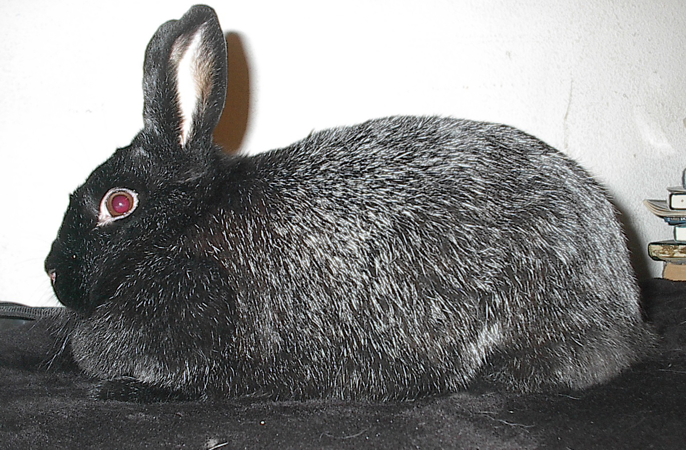
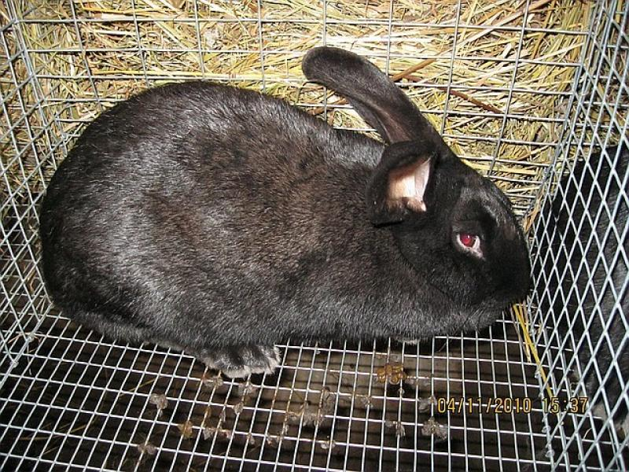
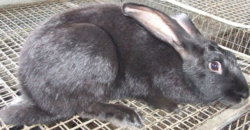
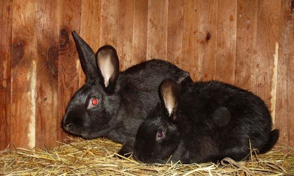

Історія виведення породи
Порода Чорно-бурий затверджена офіційно у 1948 році. Роботи зі створення велися у звірорадгоспі «Бірюлінський» (Татарська АРСР) під керівництвом зоотехніка Ф.В. Нікітіна протягом 1942–1948 років.
Основою для схрещування послугували три породи: Фландр (великий бельгійський велетень, донор розміру та кісткяка), Білий велетень (донор скороспілості та м'ясності) та Віденський блакитний (донор щільності хутра та аспідного підпуху). Складне відтворювальне схрещування впродовж кількох поколінь дозволило закріпити унікальний тип забарвлення, який імітує хутро чорно-бурої лисиці, при цьому зберігши господарські якості.
На момент виведення порода мала стратегічне значення: хутро чорно-бурої лисиці було надзвичайно цінним, а кролятина вирішувала проблему м'ясопостачання у воєнний і повоєнний час. Сьогодні порода визнана рідкісною і перебуває під загрозою зникнення — чистопородний племінний матеріал важко знайти.
Зовнішній вигляд і будова тіла

До 4-місячного віку крольчата суто чорні, потім починають буріти
Жива маса
4–6 кг (самці 4–5 кг, самиці 5–6 кг)
Довжина тулуба
58–65 см (стандарт — 61 см)
Обхват грудей
35–40 см (стандарт — 37 см)
Конституція
Міцна, подовжений тулуб, глибокі груди, розвинене підгруддя
Голова та вуха
Голова велика, вуха довгі та широкі, стоячі
Круп та ноги
Круп округлий, ноги товсті, довгі, добре розвинені
Структура та забарвлення хутра — головна особливість породи
Напрямне волосся
Чорне, з деяким освітленням біля основи. Формує верхній захисний ярус шерсті.
Остьове волосся
Зонально забарвлене. На боках: підстава — аспідно-синя, далі — бура зона, потім жовтувато-біла, кінчик — чорний. Кінчики створюють блискучу чорну вуаль по всьому тілу.
Пухове волосся
Аспідного (темно-сірого) кольору з бурими кінчиками. Утворює густий, теплий підшерсток.
Чому воно цінне
Поєднання трьох типів волосся дає унікальний ефект «чорно-бурої лисиці» без жодного додаткового фарбування. Шкурка готова до переробки одразу після вичинки.
Довжина волосяного покриву
Нормальновалосий тип. Не відноситься ні до довговолосих (>5 см), ні до коротковолосих (1.5–2.0 см) порід.
Продуктивність
М'ясна продуктивність
Порода відноситься до хутрово-м'ясного напряму, але м'ясні показники у неї на рівні спеціалізованих м'ясних порід.
Середньодобовий приріст молодняку — 39 г. З 2 до 3 місяців витрата корму на 1 кг приросту становить 3–4 кормові одиниці — хороший показник конверсії.
Хутрова продуктивність
Шкурка повністю готова до використання у легкій промисловості одразу після вичинки. Це суттєва економія на обробці.
Завдяки великому тілу шкурка крупна — площею 15–20 дм², що відповідає категорії «велика» і має вищу закупівельну вартість.
Осінньо-зимовий період, 7–8 місяців, коли хутро досягає максимальної густини та блиску.
Крольчата до 4 місяців чорні, потім відбувається перехідне буріння. Важливо не плутати вікове буріння з дефектом забарвлення.
Забійний вихід м'яса — один з найвищих серед вітчизняних порід
Утримання та обладнання
Порода добре пристосована до континентального клімату — переносить значні коливання температур, але вимагає захисту від протягів і підвищеної вологості, які є головними провокаторами респіраторних захворювань.
Тип утримання
Клітковий метод — найкращий для крупних порід. Вольєрне утримання допустиме, але ускладнює контроль розмноження та індивідуальний облік.
Розміри клітки
Для дорослого кроля: не менше 80×60×50 см. Для самиці з гніздовим відділенням: 100×60×50 см. Для відгодівельного молодняку: 100×100×40 см на 5–7 голів.
Температурний режим
Оптимальна температура: +10…+20°C. Переносять до -15°C (при відсутності протягів), але при морозі нижче -20°C необхідне утеплення. Критичний верхній поріг — +30°C і вище.
Вологість і вентиляція
Вологість повітря — 60–70%. Вентиляція обов'язкова, але без протягів. Підвищена вологість понад 80% різко збільшує ризик кокцидіозу та пастерельозу.
Освітлення
Тривалість світлового дня: 16–18 годин для самиць у репродуктивний сезон, 8–10 годин для відгодівельного молодняку. Штучне освітлення стимулює статеву активність та молочність.
Підстилка та гігієна
Дно клітки — рейкова підлога з просвітами або сітка 16×48 мм. Прибирання кліток щодня (прибрати кал), генеральне дезінфікування — раз на місяць. Поїлки чистити раз на 2–3 дні.
Годівля Чорно-бурих кроликів
Порода невибаглива до кормів і добре оплачує з'їдене приростом. Основний принцип — різноманітний раціон з обов'язковою наявністю грубих кормів для нормальної перистальтики кишечнику.
Сіно (основа раціону)
Лугове або злаково-бобове сіно — 100–200 г на добу для дорослої особини. Повинне бути завжди доступне. Сіно забезпечує клітковину, необхідну для руху ШКТ, і є профілактикою шлункового стазу.
Гілковий корм
Гілки яблуні, груші, верби, берези (не отруйних порід) — 100–150 г кілька разів на тиждень. Стимулює жувальний апарат, стирає зуби, насичує мікроелементами.
Трав'яне борошно
Висушена й перемелена трава (люцерна, конюшина) — цінна добавка в зимовий раціон. Містить протеїн, каротин, вітамін Е. До 30–40 г на голову на добу.
Солома
Овсяна або ячмінна солома — лише як підстилка або мінімальне доповнення в раціоні. Поживність низька, але клітковина допомагає у разі відсутності сіна.
Коренеплоди
Морква — найкращий соковитий корм. 150–200 г на добу. Буряк кормовий — до 200 г (у надмірній кількості викликає розлад ШКТ). Цукровий буряк — не більше 50–80 г через вміст цукру.
Зелені корми (літо)
Трава: конюшина, люцерна, тимофіївка, злакові — до 500–700 г на добу. Важливо: зелена маса повинна бути підв'яленою (не мокрою після дощу або роси), щоб уникнути здуття.
Кабачки, гарбуз
Добре поїдаються, мають помірну калорійність. Гарбуз також містить насіння, багаті на жири й антигельмінтні речовини (кукурбітин). До 200 г.
Заборонено
Цибуля, часник, капуста (у великих кількостях), картопля сира, помідори, баклажани, плоди бузини, листя томату, молочай, лютик, чемериця — токсичні або викликають метеоризм.
Ячмінь
Основна зернова культура для м'ясного відгодівлі. Подрібнений або у вигляді плющенки. До 40–50% концентратної частини раціону. Добре засвоюється, сприяє набору маси.
Пшениця та кукурудза
Пшениця — до 20–30% раціону. Кукурудза — до 20% (висококалорійна, але одноманітний раціон на кукурудзі призводить до ожиріння). Обов'язково подрібнювати.
Соєвий шрот / макуха
Джерело протеїну — до 10–15% раціону. Особливо важливий для лактуючих самиць і молодняку в перші місяці. Соєва макуха містить близько 45% сирого протеїну.
Соняшниковий шрот
Замінник або доповнення до соєвого. Протеїну менше (28–32%), але вища доступність у вітчизняних господарствах. До 8–10% раціону. У надлишку — підвищує вміст жиру в тушці.
Переваги гранульованого корму
Рівномірний склад у кожній гранулі — тварина не вибирає смачніші компоненти. Зменшується пил, зручне дозування. Для великих господарств — значна економія часу на годівлю.
Норми гранульованого корму
Дорослі кролі у стані спокою: 150–180 г/добу. Вагітні самиці: 200–220 г. Лактуючі самиці: 350–450 г. Молодняк 30–60 днів: 80–120 г. Відгодівельний молодняк: 180–220 г.
Склад якісного гранулювання
Сіно/трав'яне борошно (40–45%) + зерно (35–40%) + шрот (10–12%) + кормова крейда (1–2%) + сіль (0.5%) + премікс. Розмір гранул: 3–4 мм діаметр, 10–15 мм довжина.
Важливо
Навіть при годівлі гранулятом сіно має бути доступне постійно. Гранули не замінюють грубий корм — вони лише концентрат. Перехід на новий корм здійснювати поступово, 7–10 днів.
Вода — критично важливий ресурс
Кролики споживають значно більше води, ніж прийнято вважати. Норми споживання:
Нестача води навіть на 4–6 годин знижує молочність самиць та гальмує ріст молодняку. Вода завжди має бути свіжою, взимку — незамерзаючою (+10…+15°C).
Розведення
Статева зрілість та перше парування
Самки Чорно-бурих досягають статевої зрілості у 4–4.5 місяці, але перше парування рекомендовано проводити не раніше 5–6 місяців, коли досягнута маса не менше 3.5–4 кг. Самці — від 6 місяців.
Раннє парування (до 4 місяців) у великих порід призводить до виснаження самиці, дрібних крольчат та ускладнень при окролі.
Статеве полювання
На відміну від більшості тварин, у кроликів немає чіткого циклу охоти. Самиця приймає самця у будь-який час, крім вагітності та перших 2 тижнів після окролу. Ознаки охоти: набряклість і почервоніння петлі, неспокій, труться об стінки клітки.
Спаровування
Самицю підсаджують до самця (не навпаки). Після першого покриття через 6–8 годин роблять повторне спаровування для підвищення запліднення. Одного самця використовують не більше 2–3 разів на тиждень, щоб зберегти якість сперми.
Вагітність і окріл
Парування. Вагітність у кроликів — 29–35 днів (в середньому 31 день). Більший послід — коротша вагітність.
Контрольне прощупування (пальпація). Запліднені зародки відчуваються як ланцюжок із кульок діаметром 1.5–2 см.
Підкладання гніздового ящика. Самиця вщипує пух з черева і вистилає гніздо. Не турбувати зайвий раз.
Окріл. Середня плодючість — 7–9 крольчат. Маса при народженні 80–90 г. Крольчата народжуються сліпими, голими, повністю залежними.
Відкриваються очі. Починають виходити з гнізда на 16–18 день.
Відлучення від самиці. Молодняк відсаджують у групові клітки за статтю.
Кратність окролів на рік
При традиційному розведенні — 4–5 окролів на рік. При ущільненому (парування через 2–3 тижні після окролу) — до 7–8, але це виснажує самицю. Для Чорно-бурих рекомендується 4–5 окролів зі збереженням якісного приплоду.
Здоров'я, профілактика та хвороби
Чорно-бурі мають добрий природний імунітет, але, як і всі кролики, схильні до низки захворювань. Більшість проблем зі здоров'ям стадо можна попередити вакцинацією та дотриманням санітарних норм.
Обов'язкова вакцинація
ВГХК (вірусна геморагічна хвороба кроликів)
Гострий вірус з летальністю до 70–90% без вакцинації. Вакцинація з 45 днів, ревакцинація кожні 6–12 місяців. Не лікується — лише профілактика.
Перша вакцина — 45 днівМіксоматоз
Вірусне захворювання, що передається комахами. Набряки, кон'юнктивіт, летальність без вакцинації — 90–100%. Вакцинація з 28–30 днів, ревакцинація двічі на рік (навесні та восени).
Перша вакцина — 28–30 днівПастерельоз
Бактеріальна інфекція дихальних шляхів. Провокується стресом, протягами, підвищеною вологістю. Вакцинація знижує смертність, але не дає 100% захисту.
За рекомендацією ветеринараЧасті хвороби та їх ознаки
Щоденний огляд — профілактика дорожча лікування
Перевіряти апетит — кроль, що не їсть, це сигнал тривоги
Кал повинен бути круглим, твердим, рівномірним. М'який цекотроф — норма
Очі мають бути ясними, без виділень і склейок
Ніс — без виділень, дихання — рівне, без хрипів
Шерсть — блискуча, рівна. Витриклини шерсті вказують на стрес або хворобу
Зуби — відкрити рот, перевірити прикус. Малоклюзія потребує корекції
Переваги та недоліки породи
Переваги
- Високий забійний вихід м'яса — 57–63%
- Унікальне хутро, що не потребує фарбування
- Стійкість до континентального клімату та морозів
- Невибагливість до кормів та умов утримання
- Висока плодючість — 7–9 крольчат у посліді
- Хороша скороспілість: 4.3 кг у 4 місяці
- Добра конверсія корму: 3–4 кг/кг приросту
- Крупний розмір шкурки — висока товарна цінність
- Міцна конституція, добрий природний імунітет
Недоліки
- Порода рідкісна — важко знайти чистопородний племінний матеріал
- Для фермерських обсягів м'ясна продуктивність поступається спеціалізованим м'ясним породам
- Великий розмір вимагає більших кліток і більше корму
- Самиці середньої молочності — можуть не виходити великі посліди
- До 4 місяців крольчата мають нестандартне (чорне) забарвлення — труднощі з оцінкою
- Слабка комерційна база: мало племзаводів, немає масового виробництва
Кому підходить порода
Чорно-бурий — оптимальний вибір для присадибного та малого фермерського господарства, яке хоче отримувати одночасно якісне м'ясо і цінну шкурку. Порода витримана до умов України та суміжних кліматичних зон. Підходить кролівникам, які цінують невибагливість і природну стійкість поголів'я. Не підходить для промислового м'ясного виробництва — там краще спрацюють Новозеландський білий або Каліфорнійський.
Чорно-бурий кролик у деталях

Велика голова, широкі вуха — характерна риса породи
Хутро: ефект «чорно-бурої лисиці» без фарбування
Самиця з потомством. Молочність середня